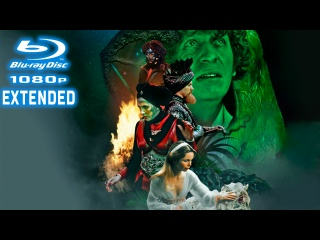
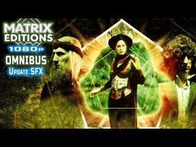
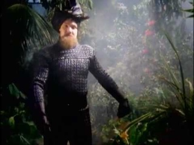

+ Расширенная версия (эпизод 3) +4 сек. Субтитры: Русские и Английские |  |
|---|---|
с обновлением визуальных эффектов (cunningmunki) Субтитры: отсутствуют |  |
The Creature from the Pit
Дата выхода: 27 октября - 17 ноября 1979
Формат: 4 эпизода по 25 мин.
| |
Доктор и Романа прибывают на Хлорис — планету, где растительность буйствует, а металл в дефиците, и вся власть над ним сосредоточена в руках жестокой леди Адасты. Опасного чужака сбрасывают в яму — и Доктор, естественно, отправляется туда же. В яме оказывается не монстр, а Эрато — инопланетный посланник с планеты Титон, которого Адастра заточила, чтобы сохранить монополию на торговлю металлом. Серия примечательна дизайном существа: огромный аморфный комок с единственным глазом, который актёр озвучивал прямо внутри костюма. Режиссёрский дебют Кристофера Бэрри, вернувшегося к сериалу после долгого перерыва.
VHS - июль 2002 | DVD - 3 мая 2010 |  Blu-ray - 20 декабря 2021 * Версия в нашей группе |
|---|
